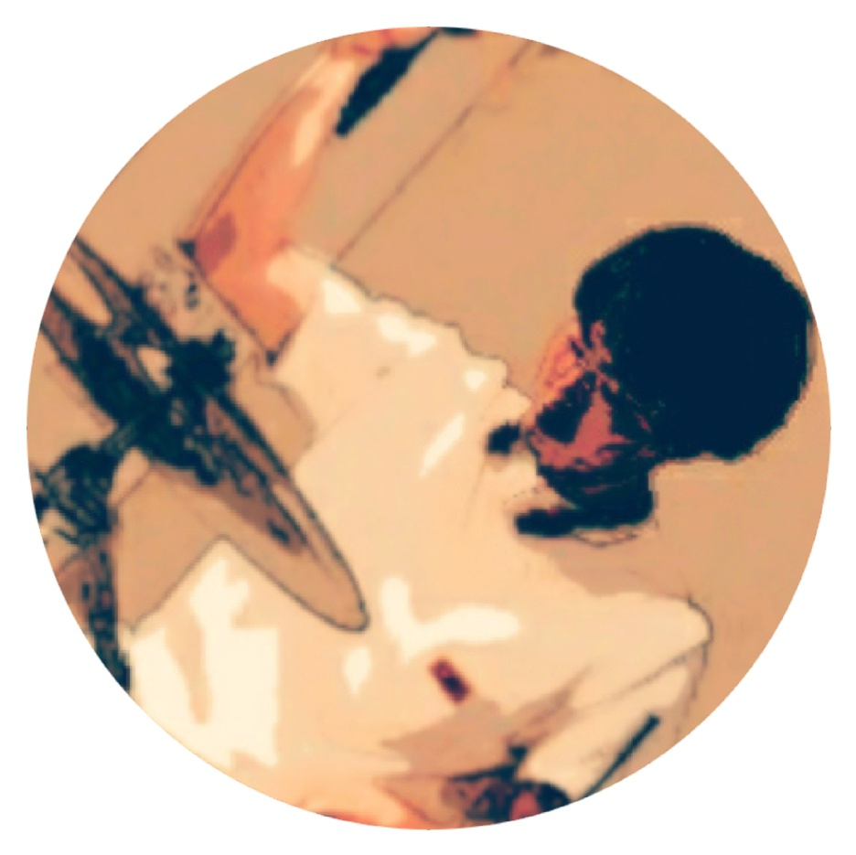

Profile
愛知県出身。現在は大学院にて、レーザーに関する研究を行っている。
最初は修士研究で使えたら便利だなという程度の気持ちでプログラミング（Python）を始めたが、その記述の容易さに魅了され、昔は嫌いだった (大学ではいきなりCから習ったので無理もない...) プログラミングが今では楽しくて仕方ない。
現在は機械学習や深層学習、アルゴリズム、統計学等の勉強に注力しているが (修士研究に関する勉強もしないと...) 、Web技術にも興味があり、その勉強の一環として本サイトを作成した。
将来は自分のドメインである材料学とIT（AI・ビッグデータ）を組み合わせた新規アイデアの創出に努めたいと思っている。
趣味：カラオケ、筋トレ、料理、ギター、ドラム、バイク、競プロ
特技：空手
Qualification
Educational backgroud
| 2019年3月 | One of the 旧帝国大学 卒業 |
|---|---|
| 2021年3月 | One of the 旧帝国大学大学院 修了(予定) |